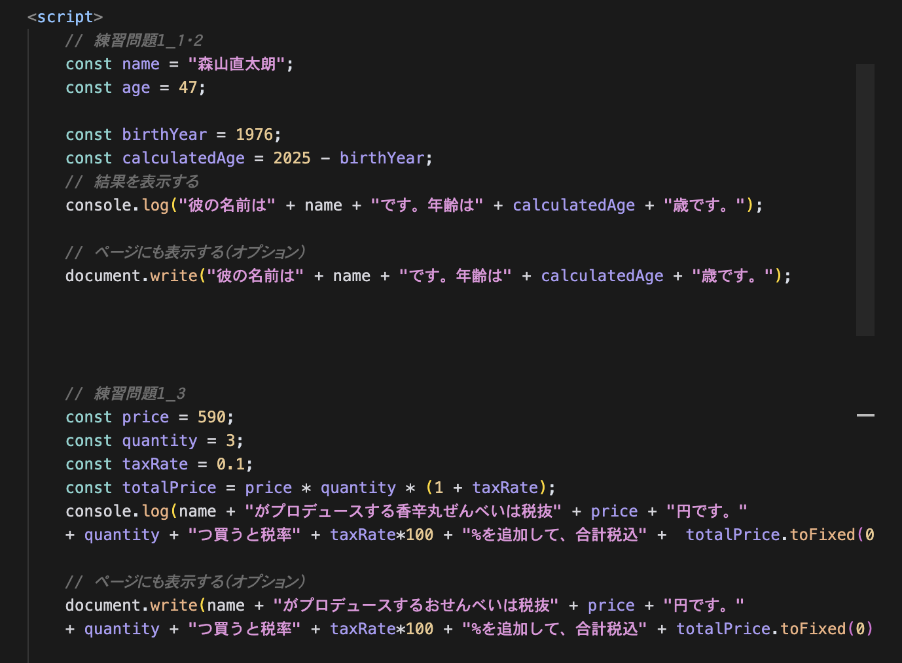
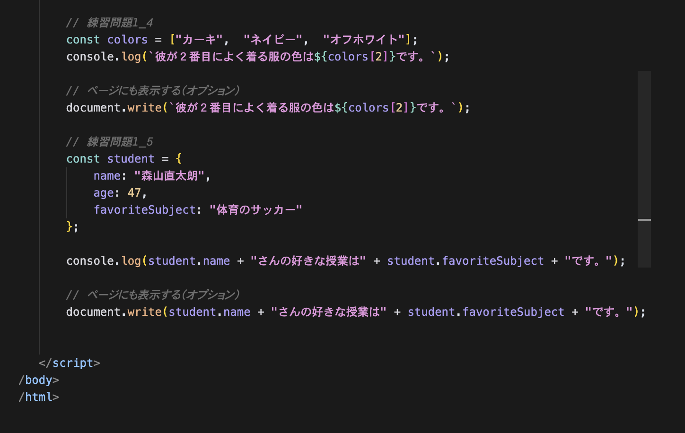
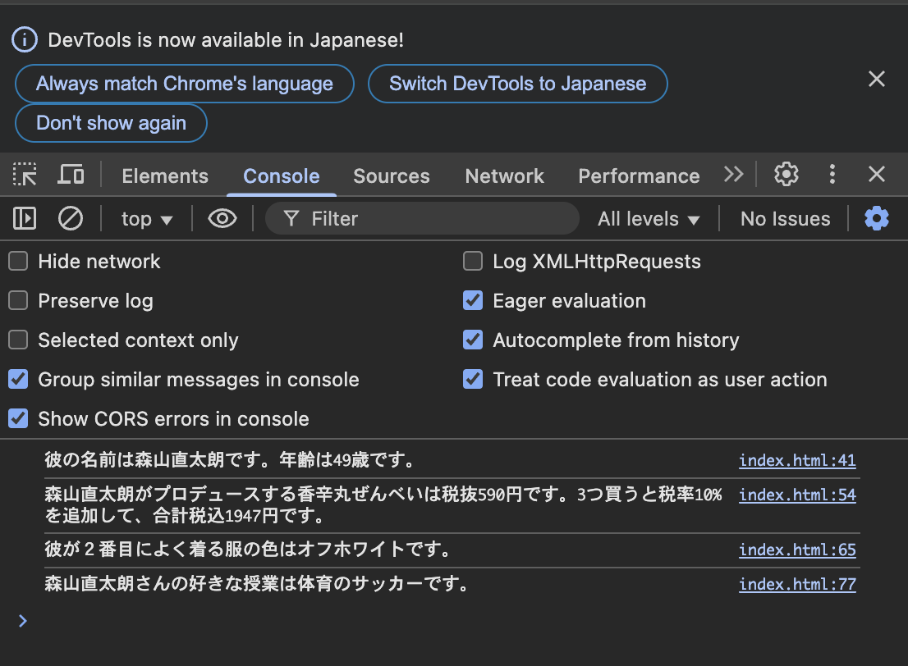
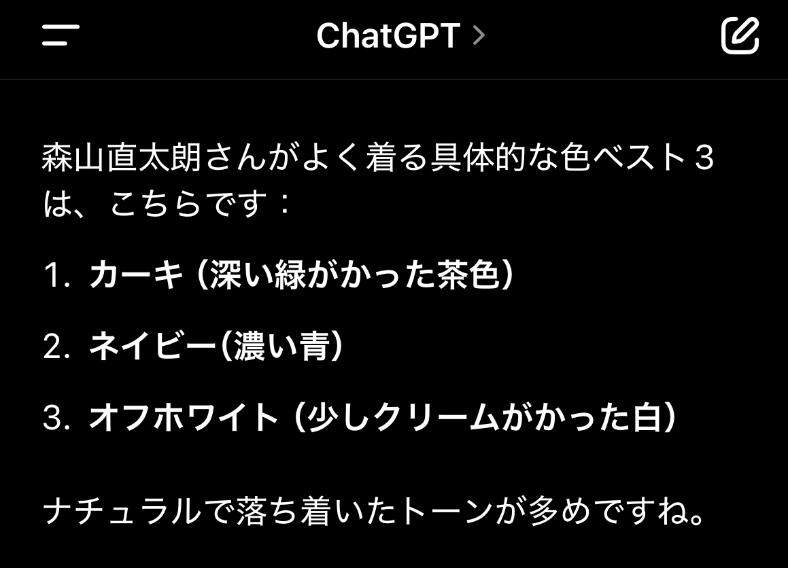

コードと実行画面





nameという変数に自分の名前を、
ageという変数に自分の年齢を代入し、コンソールに「私の名前は[名前]で、年齢は[年齢]歳です」と表示するコードを書いてください。birthYearに生まれた年を代入し、現在の年から引いて年齢を計算して
calculatedAgeという変数に代入してください。その後、計算結果をコンソールに表示してください。priceに商品の値段（例：1200）、
quantityに数量（例：3）を代入し、消費税10%を含めた合計金額を計算して表示してください。colorsに好きな色を3つ格納し、その配列の2番目の要素をコンソールに表示してください。studentを作成し、
名前（name）、年齢（age）、好きな科目（favoriteSubject）というプロパティを持たせてください。
その後、「[名前]さんの好きな科目は[好きな科目]です」と表示してください。